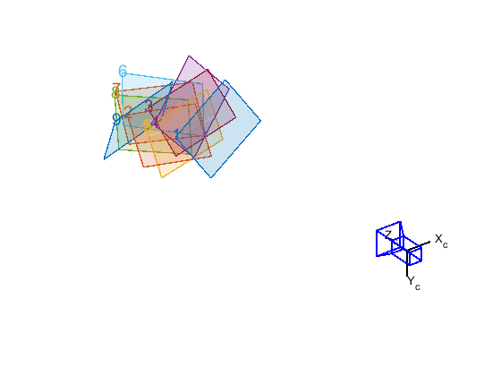
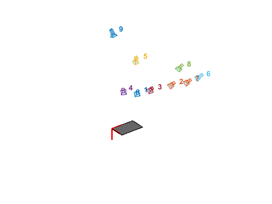
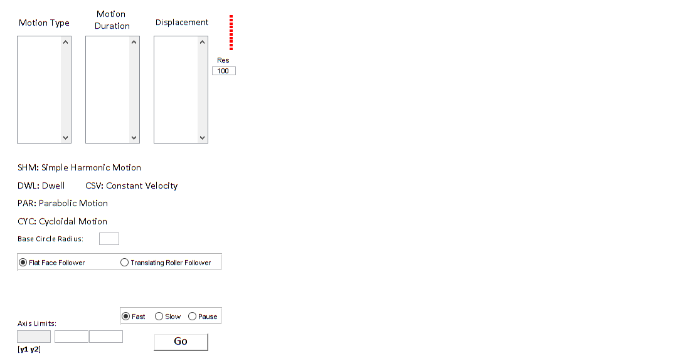

Contents
- Main Figure and Menus
- File -> quit
- File -> Save
- File -> Load
- More -> About
- Main Figure uicontrols (edits, text, etc...)
- Change Axis Limits
- Change Follower Type
- Motion Program Functions
- The 'Go' Button
- Displacement Diagram
- Velocity Diagram
- Acceleration Diagram
- Cam Profile
- Cam Animation
- '3D' Button
- Angle Function
- Circle Function
- 3D Animation
- EOF
function cams(varargin)
global S %{ Cam Simulator To launch, simply type cams in the MATLAB command window with this in the current directory. Alternatively, you can choose Debug -> Run from this editor window, or press F5. Helpful Notes: - The first edit box column is to contain the motion type(s). Each row of it should have one of the preset motions written inside it (SHM, CYC, etc...). - The second edit box is to specify the duration of each of the motion types. Each row should contain a duration in degrees for the corresponding respective motion type. - The third edit box contains the respective displacemens for the motion types. - The durations (second box) have to add up to 360 degrees. Also, while not necessary in the typical sense, the displacements should generally add up to 0. - To understand more, see one of the pre-set examples found at File -> Load. - As for the axis limits, the first is offline at the current time. The second changes the axis for the second plot (Velocity) and the third for the third plot (Acceleration). - The number under 'Res' changes the number of points for drawing the cam profile. It is the top critereon for the load time above it. - You can change the speed of rotation (Fast, Slow, Pause) during animation. - Any comments should be sent to <numandina@gmail.com>. Don't hesitate to send! - Recommended resolution is 1280 by 800 pixels. - Works only on MATLAB 7.4 (R2007a) and above. %}
Main Figure and Menus
figure('units','normalized',... 'position',[.1 .1 .8 .75],... 'color','w',... 'numbertitle','off',... 'menubar','none',... 'name','Cam Simulator') m1=uimenu('Label','File'); m2=uimenu('Label','More'); % when you click on a menu the code go to its corresponding callback function uimenu(m1,'Label','Save Model','Callback',@savv); uimenu(m1,'Label','Load Model','Callback',@ladd,'Separator','on'); uimenu(m1,'Label','Quit','Callback',@xq,'Separator','on'); uimenu(m2,'Label','About','Callback',@bott);
File -> quit
function xq(varargin) close(gcf) end
File -> Save
function savv(varargin) % make a small figure with a button, text and edit figure('units','normalized','position',[0.1 .6 .2 .2],'color','w','numbertitle','off','menubar','none','name','Save') uicontrol('style','text','units','normalized','position',[.05 .7 .9 .2],'string','Save Model As','backgroundcolor','w',... 'fontsize',15,'fontweight','b','fontname','arial','horizontalalignment','left') se=uicontrol('style','edit','units','normalized','position',[.05 .525 .7 .2],'string','','backgroundcolor','w',... 'fontsize',15,'fontweight','b','fontname','arial','horizontalalignment','left'); uicontrol('style','pushbutton','units','normalized','position',[.1 .25 .5 .2],'string','Save','backgroundcolor','w',... 'fontsize',15,'fontweight','b','fontname','arial','horizontalalignment','left','callback',@savvy) % what happens when you press 'Save' function savvy(varargin) ns=get(se,'string'); % get name in edit box close(gcf) % close the 'Save' figure window % get important values from edit boxes Types=get(MT,'string');%#ok Disps=(get(MA,'string'));%#ok Durations=(get(MD,'string'));%#ok rb=(get(BC,'string'));%#ok if get(hr,'selectedobject')==hb1 % flat face follower has less variables to save ;) %this variable is to indicate how many variables are saved. it %will be used when we load kk=1; %#ok % save needed variables in the name in the directory Models\ save(['Models\',ns,'.mat'],'Types','Disps','Durations','rb','kk') else kk=2; %#ok rd=(get(t2,'string')); %#ok e=(get(t4,'string')); %#ok kc=(get(t6,'string')); %#ok save(['Models\',ns,'.mat'],'Types','Disps' ,'Durations' ,'rb','rd','e','kc','kk') end end end
File -> Load
function ladd(varargin) % make a small figure window with a button, edit and text figure('units','normalized','position',[0.1 .6 .4 .2],'color','w','numbertitle','off','menubar','none','name','Load') uicontrol('style','text','units','normalized','position',[.05 .7 .9/2 .2],'string','Enter Name of Model','backgroundcolor','w',... 'fontsize',11,'fontweight','b','fontname','arial','horizontalalignment','left') uicontrol('style','text','units','normalized','position',[.05+.9/2+.1-.1 .7 .9/2 .2],'string','Available Models','backgroundcolor','w',... 'fontsize',11,'fontweight','b','fontname','arial','horizontalalignment','left') se=uicontrol('style','edit','units','normalized','position',[.05 .525 .7/2 .2],'string','','backgroundcolor','w',... 'fontsize',15,'fontweight','b','fontname','arial','horizontalalignment','left'); uicontrol('style','pushbutton','units','normalized','position',[.1 .25 .5/2 .2],'string','Load','backgroundcolor','w',... 'fontsize',15,'fontweight','b','fontname','arial','horizontalalignment','left','callback',@laddy) % get all files in the folder 'Models' that end with '.mat' pW=dir('Models\*.mat'); % save their names as a character matrix hol=strvcat(pW.name); % change '.mat' into spaces for each name for lopp=1:size(hol,1) hol(lopp,:)=strrep(hol(lopp,:),'.mat',repmat(' ',1,4)); end % make a listbox with the previous names matrix as string pl=uicontrol('style','listbox','max',2,'units','normalized','position',[.05+.9/2 .1 .9/2 .7],'string',hol,'backgroundcolor','w',... 'fontsize',11,'fontweight','b','fontname','arial','horizontalalignment','left','callback',@yah); % every time you click a name in the listbox the name is displayed in % the edit box as per the following function function yah(varargin) sh=get(pl,'value'); % get value of chosen element in the listbox sg=(get(pl,'string')); sj=sg(sh,:); % get the string respective to that value set(se,'string',sj) % put said string in edit box end % what happens when you press the 'Load' button in the Load figure window function laddy(varargin) ns=get(se,'string'); % get the name in the edit box ns(ns==' ')=[]; % delete spaces that strvcat produced at the end of names close(gcf) % close the Load figure window % load the variable kk from name (used to see how many variables are to % be loaded, since flat face follower has less characteristics to load) load(['Models\',ns,'.mat'],'kk') if kk==1 % flat face follower % select flat face radio button set(hr,'selectedobject',hb1) % load variables from Models\'filename' load(['Models\',ns,'.mat'],'Types','Disps' ,'Durations' ,'rb') % set edit boxes as per loaded variables set(MT,'string',Types) set(MA,'string',Disps) set(MD,'string',Durations) set(BC,'string',rb) else % same as before, but roller follower has more variables to be loaded set(hr,'selectedobject',hb2) load(['Models\',ns,'.mat'],'Types','Disps' ,'Durations' ,'rb','rd','e','kc') set(MT,'string',Types) set(MA,'string',Disps) set(MD,'string',Durations) set(BC,'string',rb) set(t2,'string',rd) set(t4,'string',e) set(t6,'string',kc) end CGMT % go to the function of changing follower type (to set some things visible on/off) end end
More -> About
function bott(varargin) figure('units','normalized','position',[0.1 .7 .25 .1],'color','w','numbertitle','off','menubar','none','name','About'); uicontrol('style','text','units','normalized','position',[.05 .25 .6 .2],'string','numandina@gmail.com','backgroundcolor','w',... 'fontsize',11,'fontweight','b','fontname','arial','horizontalalignment','left'); uicontrol('style','text','units','normalized','position',[.05 .65 .6 .2],'string','Husam Aldahiyat 28/12/2008','backgroundcolor','w',... 'fontsize',11,'fontweight','b','fontname','arial','horizontalalignment','left'); end
Main Figure uicontrols (edits, text, etc...)
% some texts uicontrol('style','text','units','normalized','position',[.025 .9 .08 .05],'backgroundcolor','w','max',2,... 'fontsize',12,'fontname','calibri','string','Motion Type') uicontrol('style','text','units','normalized','position',[.125 .9 .08 .075],'backgroundcolor','w','max',2,... 'fontsize',12,'fontname','calibri','string','Motion Duration') uicontrol('style','text','units','normalized','position',[.225 .875 .085 .075],'backgroundcolor','w','max',2,... 'fontsize',11,'fontname','calibri','string','Displacement') % this is the black axis that acts as a seperator axes('position',[.35 0 .025 1],'color','k','xcolor','w','ycolor','w','zcolor','w','xtick',100,'ytick',100) % the little squares above 'Res'. they act as a loading bar hl(1)=uicontrol('style','text','units','normalized','position',[.335 .95 .005 .0075],'backgroundcolor','r'); hl(2)=uicontrol('style','text','units','normalized','position',[.335 .94 .005 .0075],'backgroundcolor','r'); hl(3)=uicontrol('style','text','units','normalized','position',[.335 .93 .005 .0075],'backgroundcolor','r'); hl(4)=uicontrol('style','text','units','normalized','position',[.335 .92 .005 .0075],'backgroundcolor','r'); hl(5)=uicontrol('style','text','units','normalized','position',[.335 .91 .005 .0075],'backgroundcolor','r'); hl(6)=uicontrol('style','text','units','normalized','position',[.335 .9 .005 .0075],'backgroundcolor','r'); hl(7)=uicontrol('style','text','units','normalized','position',[.335 .89 .005 .0075],'backgroundcolor','r'); hl(8)=uicontrol('style','text','units','normalized','position',[.335 .88 .005 .0075],'backgroundcolor','r'); hl(9)=uicontrol('style','text','units','normalized','position',[.335 .87 .005 .0075],'backgroundcolor','r'); hl(10)=uicontrol('style','text','units','normalized','position',[.335 .86 .005 .0075],'backgroundcolor','r'); % dummy text, used only to store certain values so that they would be retrieved % later by another function dummy1=uicontrol('style','text','visible','off','max',2); dummy2=uicontrol('style','text','visible','off','max',2); dummy3=uicontrol('style','text','visible','off','max',2); % some more stuff uicontrol('style','text','units','normalized','position',[.31 .82 .035 .025],'string','Res','backgroundcolor','w'); rR=uicontrol('style','edit','units','normalized','position',[.31 .79 .035 .025],'string','100','backgroundcolor','w'); MT=uicontrol('style','edit','units','normalized','position',[.025 .6 .08 .3],'backgroundcolor','w','max',2,... 'fontsize',14,'fontname','calibri'); MD=uicontrol('style','edit','units','normalized','position',[.125 .6 .08 .3],'backgroundcolor','w','max',2,... 'fontsize',14,'fontname','calibri'); MA=uicontrol('style','edit','units','normalized','position',[.225 .6 .08 .3],'backgroundcolor','w','max',2,... 'fontsize',14,'fontname','calibri'); uicontrol('style','text','units','normalized','position',[.025 .5 .2 .05],'backgroundcolor','w',... 'fontsize',12,'fontname','calibri','string','SHM: Simple Harmonic Motion','horizontalalignment','left'); uicontrol('style','text','units','normalized','position',[.025 .45 .3 .05],'backgroundcolor','w',... 'fontsize',12,'fontname','calibri','string','DWL: Dwell CSV: Constant Velocity','horizontalalignment','left'); uicontrol('style','text','units','normalized','position',[.025 .4 .2 .05],'backgroundcolor','w',... 'fontsize',12,'fontname','calibri','string','PAR: Parabolic Motion','horizontalalignment','left'); uicontrol('style','text','units','normalized','position',[.025 .35 .2 .05],'backgroundcolor','w',... 'fontsize',12,'fontname','calibri','string','CYC: Cycloidal Motion','horizontalalignment','left'); uicontrol('style','text','units','normalized','position',[.025 .3 .15 .05],'backgroundcolor','w',... 'fontsize',10,'fontname','calibri','string','Base Circle Radius: ','horizontalalignment','left'); BC=uicontrol('style','edit','units','normalized','position',[.145 .32 .03 .035],'backgroundcolor','w',... 'fontsize',10,'fontname','calibri','string',' ','horizontalalignment','center'); % 'Go' pushbutton BB=uicontrol('style','pushbutton','units','normalized','position',[.225 .025 .08 .05],'backgroundcolor','w',... 'fontsize',14,'fontname','calibri','string','Go','callback',@go); D3=uicontrol('style','pushbutton','units','normalized','position',[.225 .4 .08 .05],'backgroundcolor','w',... 'fontsize',14,'fontname','calibri','string','3D','callback',@go3,'visible','off'); % choose follower type radio group hr=uibuttongroup('Units','normalized',... 'Position',[.025 .25 .3 .05],'SelectionChangeFcn',@CGMT); hb1=uicontrol('Style','Radiobutton','String','Flat Face Follower','Units','normalized',... 'Position',[0 0 1/2 1],'Parent',hr,'backgroundcolor',[1 1 1],'foregroundcolor',[0 0 0]); hb2=uicontrol('Style','Radiobutton','String','Translating Roller Follower','Units','normalized',... 'Position',[1/2 0 1/2 1],'Parent',hr,'backgroundcolor',[1 1 1],'foregroundcolor',[0 0 0]); % speed of animation radio group hr2=uibuttongroup('Units','normalized',... 'Position',[.175 .1 .15 .05]); hbs=uicontrol('Style','Radiobutton','String','Fast','Units','normalized',... 'Position',[0 0 1/3 1],'Parent',hr2,'backgroundcolor',[1 1 1],'foregroundcolor',[0 0 0]); hbk=uicontrol('Style','Radiobutton','String','Slow','Units','normalized',... 'Position',[1/3 0 1/3 1],'Parent',hr2,'backgroundcolor',[1 1 1],'foregroundcolor',[0 0 0]); uicontrol('Style','Radiobutton','String','Pause','Units','normalized',... 'Position',[2/3 0 1/3 1],'Parent',hr2,'backgroundcolor',[1 1 1],'foregroundcolor',[0 0 0]); % texts that are set on/off depending on follower type t1=uicontrol('style','text','units','normalized','position',[.025 .18 .15 .05],'backgroundcolor','w',... 'fontsize',10,'fontname','calibri','string','Roller Radius: ','horizontalalignment','left'); t2=uicontrol('style','edit','units','normalized','position',[.125 .2 .03 .035],'backgroundcolor','w',... 'fontsize',10,'fontname','calibri','string',' ','horizontalalignment','center'); t3=uicontrol('style','text','units','normalized','position',[.025 .14 .15 .05],'backgroundcolor','w',... 'fontsize',10,'fontname','calibri','string','Offset: ','horizontalalignment','left'); t4=uicontrol('style','edit','units','normalized','position',[.125 .16 .03 .035],'backgroundcolor','w',... 'fontsize',10,'fontname','calibri','string',' ','horizontalalignment','center'); t5=uicontrol('style','text','units','normalized','position',[.025 .1 .15 .05],'backgroundcolor','w',... 'fontsize',10,'fontname','calibri','string','Inside/Ouside(~): ','horizontalalignment','left'); t6=uicontrol('style','edit','units','normalized','position',[.125 .12 .03 .035],'backgroundcolor','w',... 'fontsize',10,'fontname','calibri','string','0','horizontalalignment','center'); % text and edits at the lower left corner of the main figure window uicontrol('style','text','units','normalized','position',[.025 .065 .15 .05],'backgroundcolor','w',... 'fontsize',10,'fontname','calibri','string','Axis Limits: ','horizontalalignment','left'); uicontrol('style','text','units','normalized','position',[.025 -.005 .15 .05],'backgroundcolor','w',... 'fontsize',10,'fontname','calibri','string','[y1 y2]','horizontalalignment','left','fontweight','b'); uicontrol('style','edit','units','normalized','position',[.025 .05 .05 .035],'backgroundcolor','w',... 'fontsize',10,'fontname','calibri','string','','horizontalalignment','center','callback',@ca1,'enable','off'); al2=uicontrol('style','edit','units','normalized','position',[.08 .05 .05 .035],'backgroundcolor','w',... 'fontsize',10,'fontname','calibri','string','','horizontalalignment','center','callback',@ca2); al3=uicontrol('style','edit','units','normalized','position',[.13 .05 .05 .035],'backgroundcolor','w',... 'fontsize',10,'fontname','calibri','string','','horizontalalignment','center','callback',@ca3); % create the four axes and hide them for now a1=axes('position',[.4 .65 .55/3 .3]); % Displacement a2=axes('position',[.4+.55/3+.025 .65 .55/3 .3]); % Velocity a3=axes('position',[.4+.55/3*2+.05 .65 .55/3 .3]); % Acceleration a4=axes('position',[.4 .025 .55 .55]); % cam profile axes set(findobj('type','axes','-not','color','k'),'visible','off') % hide them % evaluate this function which sets certain uicontrols' visiblity on/off CGMT



Change Axis Limits
function ca2(varargin) an1=str2num(get(al2,'string')); %#ok % get limits from edit box set(a2,'ylim',an1(1:2)); % set these limits for the corresponding axes end function ca3(varargin) an1=str2num(get(al3,'string')); %#ok set(a3,'ylim',an1(1:2)); end %{ function ca1(varargin) an1=str2num(get(al1,'string')); set(a1,'ylim',an1(1:2)); end %}
Change Follower Type
function CGMT(varargin) if get(hr,'selectedobject')==hb1 % flat face set(t1,'visible','off') % rf text set(t2,'visible','off') % rf edit set(t3,'visible','off') % offset text set(t4,'visible','off') % offset edit set(t5,'visible','off') % inside/outside text set(t6,'visible','off') % inside/outside edit else set(t1,'visible','on') set(t2,'visible','on') set(t3,'visible','on') set(t4,'visible','on') set(t5,'visible','on') set(t6,'visible','on') end end
Motion Program Functions
% Dwell function [s,si,ti]=DWL(si,ti,a) s=sym(si); % create motion equation ezplot(s,[ti,ti+a]) % plot motion equation ti=ti+a; end % Simple Harmonic Motion function [s,si,ti]=SHM(si,ti,h,a) s=si+h/2*(1-cos(pi/a*(sym('x')-ti))); si=subs(s,a+ti); ezplot(s,[ti,ti+a]) ti=ti+a; end % Parabolic Motion function [s1,s2,si,ti]=PAR(si,ti,h,a) s1=si+2*h/a^2*(sym('x')-ti)^2; s2=si+h*(-1+4*(sym('x')-ti)/a-2*(sym('x')-ti)^2/a^2); si=subs(s2,ti+a); ezplot(s1,[ti,ti+a/2]) hold on ezplot(s2,[ti+a/2,ti+a]) xlim([ti ti+a]) ti=ti+a; end % Cycloidal Motion function [s,si,ti]=CYC(si,ti,h,a) s=si+h*((sym('x')-ti)/a-1/2/pi*sin(2*pi*(sym('x')-ti)/a)); si=subs(s,ti+a); ezplot(s,[ti,ti+a]) ti=ti+a; end % Constant Velocity function [s,si,ti]=CV(si,ti,h,a) s=si+h/a*((sym('x')-ti)); si=subs(s,ti+a); ezplot(s,[ti,ti+a]) ti=ti+a; end
The 'Go' Button
function go(varargin)
% make 3D button disappear until after loading set(D3,'visible','off') % if the button's string is 'stop', do just that if strcmp(get(BB,'string'),'Stop') set(BB,'string','Go') if get(hr,'selectedobject')==hb1 % flat face chosen set(D3,'visible','on') % make 3D button appear end return end % reset all loading 'blocks' to red colour set(hl,'backgroundcolor','r') % get values for the three main edit boxes Types=get(MT,'string'); Disps=[str2num(get(MA,'string'));0];%#ok Durations=str2num(get(MD,'string')).*pi/180;%#ok % reveal axes set(findobj('type','axes'),'visible','on') si=0; % initial displacement is zero ti=0; % initial theta is zero S=[]; % motion equation(s) matrix T=ti; % theta timeline-esque vector % set displacement axes as current one (i.e. all subsequent plots will % be done on it) axes(a1) cla hold on
Displacement Diagram
% the following loop obtains for us the motion equation(s) for the % follower as well as plots the displacement diagram for lp1=1:length(Durations) % go through loop once for every motion type entered pp=ti; % variable used for parabolic motion switch Types(lp1,:) case 'DWL' [s,si,ti]=DWL(si,ti,Durations(lp1)); S=[S;s]; % stack latest motion equation T=[T;ti]; % put latest theta in theta timeline case 'SHM' [s,si,ti]=SHM(si,ti,Disps(lp1),Durations(lp1)); S=[S;s]; T=[T;ti]; case 'PAR' [s1,s2,si,ti]=PAR(si,ti,Disps(lp1),Durations(lp1)); S=[S;s1;s2]; T=[T;(ti+pp)/2;ti]; case 'CYC' [s,si,ti]=CYC(si,ti,Disps(lp1),Durations(lp1)); S=[S;s]; T=[T;ti]; case 'CSV' [s,si,ti]=CV(si,ti,Disps(lp1),Durations(lp1)); S=[S;s]; T=[T;ti]; end end JJ=zeros(length(S),1); %Preallocate to save time! for klp=1:length(S) % get displacements of follower at each of the critical values of theta JJ(klp)=subs(S(klp),T(klp+1)); end % using previous JJ vector set axis limits for displacement diagram axis([0 ti min(JJ)-(max(JJ)-min(JJ))/10-1e-9 max(JJ)+(max(JJ)-min(JJ))/10+1e-9]) title('Displacement') xlabel('Radians')
Velocity Diagram
axes(a2) cla hold on % velocity is the derivative of displacement ;) S1=diff(S); % plot each velocity equation for its equivalent theta range for lp1=1:length(S1) ezplot(S1(lp1),[T(lp1) T(lp1+1)]); end xlim([0 ti]) title('Velocity') xlabel('')
Acceleration Diagram
axes(a3) cla hold on % derivate velocity to obtain acceleration S2=diff(S1); % plot resultant equations for their matching theta ranges for lp1=1:length(S) ezplot(S2(lp1),[T(lp1) T(lp1+1)]); end xlim([0 ti]) title('Acceleration') xlabel('Radians') drawnow() % give user something to look at while he waits for the rest of the % computations
Cam Profile
reR=str2double(get(rR,'string')); % get number of points used to plot x=zeros(1,reR+1); % x points of profile y=zeros(1,reR+1); % y points of profile pa=zeros(1,reR+1); % pressure angles. there is a different pressure angle for each theta, % where it is the angle between the vertical line of motion and the normal % to the tangent of the two contact surfaces rb=str2double(get(BC,'string')); % get base circle radius cc=0; % counter QM=10; % used for loading blocks if get(hr,'selectedobject')==hb1 % flat face chosen who=1; e=0; rd=0; beta=0; else % translating roller follower who=0; rd=str2double(get(t2,'string')); % roller radius e=str2double(get(t4,'string')); % roller offset beta=asin(e/sum([rb,rd])); end % change theta from zeros to 360 degrees for k=0:2*pi/reR:2*pi % increment counter cc=cc+1; % obtain where the current angle is in terms of theta timeline % (i.e. get in which range of angles it is) for p=1:length(T)-1 if k<=T(p+1) a=p; break end end % every time theta is increased 10% of the 2*pi radians, change a % loading block's colour to green if (k/2/pi*100)>QM set(hl(QM/10),'backgroundcolor','g') drawnow() QM=QM+10; end % equations for the cam profile. % remember: % - different followers call for different equations and profiles % - we need s and s', which can be obtained by substituting our % angle into its matching motion equation and velocity equation if get(hr,'selectedobject')==hb1 % flat face follower x(cc)=-(rb+subs(S(a),k))*sin(k)-subs(S1(a),k)*cos(k); y(cc)=(rb+subs(S(a),k))*cos(k)-subs(S1(a),k)*sin(k); else % translating roller follower if strcmp(get(t6,'string'),'1') % inside koin=-1; else % outside koin=1; end % can be found in your machinery textbook xc=-(rb+rd)*sin(k+beta)-subs(S(a),k)*sin(k); yc=(rb+rd)*cos(k+beta)+subs(S(a),k)*cos(k); dxc=-(rb+rd)*cos(k+beta)-subs(S(a),k)*cos(k)-subs(S1(a),k)*sin(k); dyc=-(rb+rd)*sin(k+beta)-subs(S(a),k)*sin(k)+subs(S1(a),k)*cos(k); x(cc)=xc-koin*rd*dyc*(dxc^2+dyc^2)^-.5; y(cc)=yc+koin*rd*dxc*(dxc^2+dyc^2)^-.5; pa(cc)=atan(((subs(S1(a),k))-e)/(subs(S(a),k)+sqrt((rb+rd)^2-e^2))); end end % just to make sure, set all loading block colours to green set(hl,'backgroundcolor','g') % set push button string to 'Stop', since soon we'll be animating set(BB,'string','Stop') % store x and y vectors in dummy texts set(dummy1,'string',mat2str(x)) set(dummy2,'string',mat2str(y)) set(dummy3,'string',mat2str(T)) % send a bunch of information to the cam animation function Untitled6(x,y,S,T,a4,a1,rb,max(JJ),BB,who,beta,e,rd,pa,reR)
end
Cam Animation
% We'll be concerned with rotating the cam around and round in clockwise % rotation. the following function will do that function Untitled6(x,y,S,T,fi2,agl,rb,last,BB,who,beta,varargin) reR=varargin{4}; % number of points pA=varargin{3}; % pressure angles vector axes(fi2) % big axes cla hold on % h=plot(x,y); % plot the cam profile and fill it in grey h=fill(x,y,[.5 .5 .5]); set(h,'linewidth',2) % plot the base circle, just for reference circle([0 0],rb,reR,'c--') plot(0,0,'c.') % thicken the digrams and soon to be drawn follower set(findobj('type','line','color','b'),'linewidth',2) % set appropriate axis limits axis([min(x)-(max(x)-min(x))/2-varargin{2} max(x)+(max(x)-min(x))/2+varargin{2} min(y)-(max(y)-min(y))/2-varargin{2} last+rb+(max(y)-min(y))/2+varargin{2}]) axis equal p2=0; % initially, cam is rotated 0 degrees % the following is the rotation loop while strcmp((get(BB,'string')),'Stop') % keep rotating until the user presses the 'Stop' button % change speed radio buttons if get(hr2,'selectedobject')==hbs % fast fsf=10; % rotate by 10 degrees each time elseif get(hr2,'selectedobject')==hbk % slow fsf=1; else % pause fsf=0; end rotate(h,[0 0 1],-fsf,[0 0 1]) % rotate cam around centre of base circle % p2 gives us how many radians the cam has already rotated p2=p2+fsf/180*pi; if p2>2*pi p2=p2-2*pi; end % next comes the follower motion % get in what range of angles theta lies for p=1:length(T)-1 if p2<=T(p+1) a=p; break end end % then substitute our angle in its consequent motion equations ch=subs(S(a),p2)+rb; % this value gives us the y location of our follower if who % flat face follower ppp=line([min(x)+(max(x)-min(x))/4,max(x)-(max(x)-min(x))/4],[ch ch]); else % the follower circle, varargin{1} is the horizontal offest (e) ppp=circle([-varargin{1} ch+(rb+varargin{2})*cos(beta)-rb],varargin{2},100); % line representing the line of motion lll=line([-varargin{1} -varargin{1}],[0 rb*2+ch]); set(lll,'linestyle','-','color','r') % get pressure angle for current theta pa=interp1(0:2*pi/reR:2*pi,pA,p2); % draw line that represents the pressure line ooo=line([-varargin{1}-2*sin(pa) -varargin{1}+(2*varargin{2}+2)*sin(pa)],... [ch+(rb+varargin{2})*cos(beta)-rb-2*cos(pa) (ch+(rb+varargin{2})*cos(beta)-rb)+(2+2*(varargin{2}))*cos(pa)]); set(ooo,'linestyle','-','color','r') title(['\phi = ',num2str(pa/pi*180,3)]) end if exist('hag','var') delete(hag) end hag=ang([0 0],rb/2,[0 -p2],'w.'); % draw an arc from 0 to theta degrees set(ppp,'linewidth',3,'color','b') % show follower displacement on the motion diagram from before axes(agl) delete(findobj('marker','*')) plot(p2,ch-rb,'m*') % show current position on the axes drawnow() % return to our cam profile axes and tidy it up axes(fi2) axis([min(x)-(max(x)-min(x))/2-varargin{2} max(x)+(max(x)-min(x))/2+varargin{2} min(y)-(max(y)-min(y))/2-varargin{2} last+rb+(max(y)-min(y))/2+varargin{2}]) pause(.001) % duration between our 'frames' delete(ppp) if ~who delete(lll) delete(ooo) end end end
'3D' Button
function go3(varargin) x=str2num(get(dummy1,'string')); %#ok y=str2num(get(dummy2,'string')); %#ok T=str2num(get(dummy3,'string')); %#ok rb=str2double(get(BC,'string')); if get(hr,'selectedobject')==hb1 e=0; hok=1; rd=0; else e=str2double(get(t4,'string')); hok=0; rd=str2double(get(t2,'string')); end Durations=str2num(get(MD,'string')).*pi/180; %#ok Disps=[str2num(get(MA,'string'));1e-9;-1e-9];%#ok z1=sum(-abs(Disps)); z2=sum(abs(Disps)); dg(x,y,S,T,e,rb,z1,z2,hok,rd) end
end
Angle Function
% function that draws an arc based on it centre, radius and angle span. % burrows from the function CIRCLE function h = ang(centre,radius,span,style) theta = linspace(span(1),span(2),100); rho = ones(1,100) * radius; [x,y] = pol2cart(theta,rho); x = x + centre(1); y = y + centre(2); x=x(end); y=y(end); h = plot(x,y,style); end
Circle Function
% function that draws a circle based on its centre and radius. I didn't make it; % it was created by Zhenhai Wang on the MATLAB File Exchange function H=circle(center,radius,NOP,style) if (nargin==3) style='b-'; end THETA=linspace(0,2*pi,NOP); RHO=ones(1,NOP)*radius; [X,Y] = pol2cart(THETA,RHO); X=X+center(1); Y=Y+center(2); H=plot(X,Y,style); axis square end
3D Animation
function dg(x,y,S,T,e,rb,z1,z3,hok,rd) S T figure hold on set(gcf,'color','w','numbertitle','off','menubar','none','name','3D (Demo)') set(gca,'xcolor','w','ycolor','w','zcolor','w') z=zeros(size(x)); z2=ones(size(x)); view(3) f1=fill3(x,z,y,[.5 .5 .5],'edgecolor',[.7 .7 .7],'FaceVertexAlphaData',0.9,'FaceAlpha','flat'); f2=fill3(x,z2,y,[.5 .5 .5],'edgecolor',[.5 .5 .5]); % [gg,hh,jj]=cylinder(repmat(rb,1,100)); % jj=[-flipud(jj);jj]; % jj=jj*6; % for p=1:size(jj,1)/2 % jj(p,:)=[]; % end % hhh=surf(gg,jj,hh); kk=[f1;f2]; p2=0; while true rotate(kk,[0 1 0],5,[0 1 0]) p2=p2+5/180*pi; if p2>2*pi p2=p2-2*pi; end axis([(z1-rb) z3+rb -5 5 z1 z3].*2) for p=1:length(T)-1 if p2<=T(p+1) a=p; break end end ch=subs(S(a),p2)+rb; if hok a=[min(x)+(max(x)-min(x))/4 0 0; max(x)-(max(x)-min(x))/4 0 0; max(x)-(max(x)-min(x))/4 1 0; min(x)+(max(x)-min(x))/4 1 0; min(x)+(max(x)-min(x))/4 0 z3/2; max(x)-(max(x)-min(x))/4 0 z3/2; max(x)-(max(x)-min(x))/4 1 z3/2; min(x)+(max(x)-min(x))/4 1 z3/2]; else a=[0 0 0; 1 0 0; 1 1 0; 0 1 0; 0 0 z3/2; 1 0 z3/2; 1 1 z3/2; 0 1 z3/2]; a(:,1)=a(:,1)*.3; end a(:,1)=a(:,1)+e; a(:,2)=a(:,2)*.3; a(:,3)=a(:,3)+(ch)+rd; b=[1 2 6 5;2 3 7 6;3 4 8 7;4 1 5 8;1 2 3 4;5 6 7 8]; ppp=patch('vertices',a,'faces',b,'edgecolor','r','facecolor','k','linewidth',2,'FaceVertexAlphaData',0.5); rotate3d on pause(.001) delete(ppp) end end